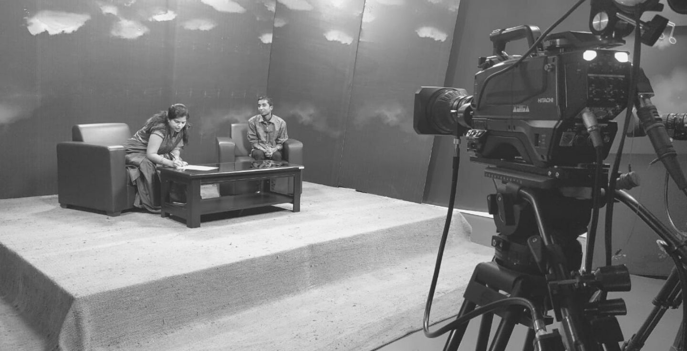

About Malviya
सत्यप्रकाश मालवीय नाम का एक नन्हा सा बालक जो, किसी विपरित परिश्थि के परिणाम स्वरूप दृष्टी हीनता का शिकार हो जाता है, तत्पश्चात उसका जीवन अन्धकार युक्त हो जाता है, उसके जीवन को आगे बढाने के लिए, उसके माता पिता उसके नेत्र चिकित्सा क लिए दर दर परेशान होते हैं, एक तरफ गांव के आस पास के लोग संक्रीड़ मानसिकता से ओत-प्रोत होकर हेय व अभिशाप के दृष्टी से देखने लगे थे, वंही से उनके घर वालो की चिंता बढ़ गई,की अब इस बालक का किया क्या जाये? एक तरफ समाज़ का संक्रीड़ विचार और दुसरी तरफ परिवार के लोगों की पालन पोषण व सिक्षा-दीक्षा की चिंता, तमाम प्रयासो के फल स्वरूप इस बालक के नेत्र चिकित्सा का कोई उपाय नही निकल सका घर वालो ने बनारस स्थित श्री हनुमान प्रसाद पुद्दार अँध विध्यालय में, उस बालक के सिक्षा के लिए प्रवेश दिलवाया गया...लेकिन प्रारंभिक दौर मे बालक के जिद की वजह से कूछ दिन उसे घर पे ही रखा गया,लेकिन कूछ उत्कृष्ट समाजिक कार्यकर्ताओं के सहयोग के माध्यम से उसे जबर्दस्ती विध्यालय वापस लाया गया.. फिर उस बालक की प्रारंभिक सिक्षा प्रारंभ हुई, फिर प्राथमिक सिक्षा और माध्यमिक सिक्षा और उच्च शिक्षा पूरी हुई, माध्यमिक सिक्षा क दौरान ही वो बालक, समाज के विषय मे चिंता करना और राष्ट्र नायकों व महापुरुषोँ का जीवन अनुशरण करना, विवेकानंद दयानंद सरस्वती व सुभाष चंद्र बोस के विचारों का प्रचार करना, मित्रो के सुख दुख मे सदेव साथ देना, ये विभिन्न कार्यों मे रहता था.. विध्यालय के तमाम गतिविधियों मे, जैसे खेल कूद व पठन पाठन व सन्गीत के प्रतियोगीता का आयोजन का नेतृत्व करना और सदैव अपने व समाज़ के अधिकारों की माँग करना, यह उस बालक का मुल स्वभाव था.... वह बालक महान सिक्षाविद महामना के बघिया मे प्रवेश लेने का संकल्प लिया और महामना के सपनो को पुरा करने का निश्चय किया.. नेत्रहीनता जीवन मे बाधक नही है, इसे सिद्ध करने का प्रयास किया, इस बालक को धीरे धीरे विश्वविद्यालय क तमाम सिक्षकों का मार्गदर्शन प्राप्त होने लगा, यह बालक अपने सिक्षा क साथ साथ समाज के उन जरुरतमंद लोगों के हित के लिए आगे आने लगा, धीरे धीरे तात्कालीन कुलपति ,रजिस्ट्रार ,डी.एस.डब्लू, जैसे सम्मानित विश्विद्यालय के अधिकारियों का दिल भी जितने का प्रयास किया... सभी उस बालक की सोच व कार्यों की प्रशंशा करने लगे, दिव्यांग पढ़े और भारत बढ़े, इस अभियान को आगे बढ़ाने का प्रयास किया.. उस बालक ने अपने विध्यार्थी जीवन मे बाल सिक्षा,पर्यावरण, चिकित्सा, मात्र शक्ती की तरक्की जैसे विभिन्न छेत्रों मे योगदान देना प्रारंभ कर दिया और आपना भारत स्वर्णिम भारत व विश्व गुरु भारत कैसे बने, इस विषय पर चीन्तन करने लगा.. उस बालक का एक ही सपना है की, "उसके उर मे है हर्ष अपार, माँ शारदे करती हैं सबको प्यार, दुआ है उस बालक की यही, भारत वर्ष तरक्की करे सालो-साल"
The human head is a constantly moving and turning pedestal. 02 September, 2015

If you're willing to be jaunty, to set them at an angle and to walk beneath them with a spring in your stride as if you're only a step away from dancing. They demand a lot of you. if you're willing to be jaunty, to set them at an angle and to walk beneath them with a spring in your stride as if you're only a step away from dancing. They demand a lot of you.
If you're willing to be jaunty, to set them at an angle and to walk beneath them with a spring in your stride as if you're only a step away from dancing. They demand a lot of you. if you're willing to be jaunty, to set them at an angle and to walk beneath them with a spring in your stride as if you're only a step away from dancing. They demand a lot of you.
Wearing hats has become like fine art. 04 May, 2015

If you're willing to be jaunty, to set them at an angle and to walk beneath them with a spring in your stride as if you're only a step away from dancing. They demand a lot of you. if you're willing to be jaunty, to set them at an angle and to walk beneath them with a spring in your stride as if you're only a step away from dancing. They demand a lot of you.
If you're willing to be jaunty, to set them at an angle and to walk beneath them with a spring in your stride as if you're only a step away from dancing. They demand a lot of you. if you're willing to be jaunty, to set them at an angle and to walk beneath them with a spring in your stride as if you're only a step away from dancing. They demand a lot of you.